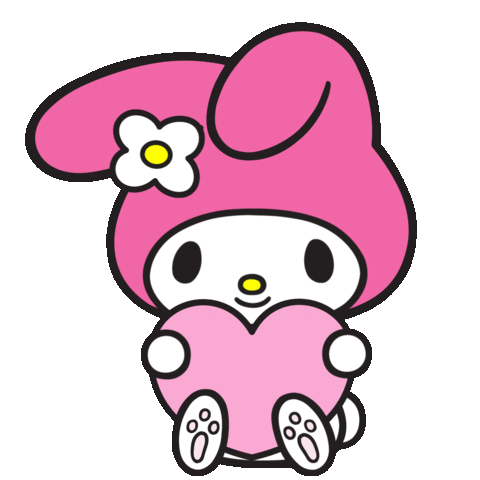
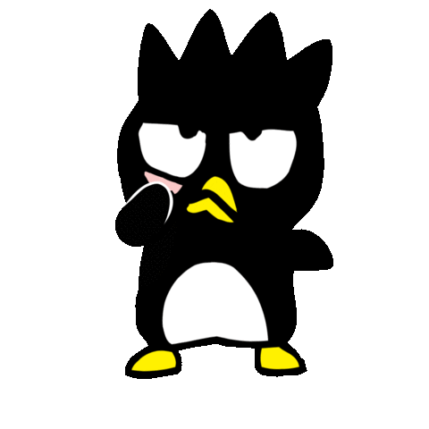
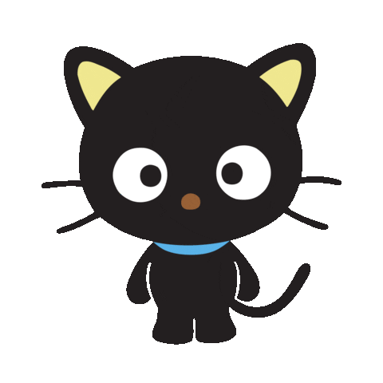

-
Hello Kitty

Born in the suburbs of London, England on November 1st, she is a little British feline girl. She is good at baking cookies, likes to collect small cute things and her favorite subjects in school are English, music and art. Her trademark signature is a red bow on her left ear.
-
My melody
Hello Kitty's best friend, she's a white rabbit and wears a pink hood that covers her ears, often having a bow or a flower on her right side. She is a very honest, good-natured girl. Her favorite food is almond pound cake. Born on January 18th in the magical forest of Mariland.
-
Little Twin Stars
They were born on Christmas Eve on Omoiyari Star in the Dream Star-Cloud. To learn how to be the best, shiniest stars they could be, they traveled a long way to Earth. Kiki has short blue hair. He loves star-fishing and inventing things. Lala has long pink hair. She loves drawing, writing poems, and cooking. Like Kiki, she wears a long sleeve white gown and has bare feet.
-
Cinnamoroll

Born on March 6th, on a cloud far up in the sky. He is a small, shy and chubby boy dog with white fur, blue eyes, pink cheeks, a plump and curly tail that resembles a cinnamon roll, and long ears that enable him to fly. He works at café cinnamon, and sometimes sleeps on customers laps. Cinnamoroll's favorite food is warm fresh cinnamonrolls.
-
Kuromi

Kuromi is My Melody's rival, who is a white rabbit wearing a black jester's hat with a pink skull on the front and a black devil's tail. The skull's facial expression changes to match Kuromi's mood. Fittingly, her birthday is Halloween.
-
Badtz-maru
Badtz-Maru is a male penguin with spiky hair. He has an attitude and was born on April 1st in Oahu, Hawaii. His hobby is collecting pictures of bad guys played by movie stars.
-
Agretsukko
Aggretsuko is a girl red panda. She is an office worker whose life at work is usually frustrating. Instead of releasing it on her coworkers, she holds back her rage and lets out all of that anger by singing death metal at the local karaoke club. Her birthday in on November 6th.
-
Chococat
He is a sweet black cat with huge black eyes. His name comes from his chocolate-colored nose. Chococat is a very spunky cat who loves to play around. He was born on May 10, 1996.
-
Pochacco

Pochacco was born on February 29th, 1989. He is a white dog with black floppy ears, but no visible mouth. He is often dressed in athletic attire, as he has a sporty and playful personality. His favorite food is banana ice cream.
-
Gudetama
Gudetama is a yolk of a raw egg with a butt crack and is sometimes depicted laying on an egg white as a bed while using bacon as a blanket. The name "Gudetama" translates from Japanese to English as "lazy egg". Gudetama is non-binary because it is an unfertilized egg. Fun fact: Every day is it's birthday.
-
Keroppi
Keroppi is a frog with big eyes and a V-shaped mouth. He lives in Donut Pond, and his birthday is on July 10th. He enjoys swimming, baseball, playing with boomerangs, and singing.
-
Pompompurin
Pompompurin lives in his own basket in the entrance hall of his sister-owner's house. His trademark is his brown beret that is always on top of his head. Pompompurin's favorite food is his mama's pudding. He's interest is collecting shoes and hide them. He is a Golden retriver dog and was born on a sunny day on April 16th.
-
Tuxedo Sam
Tuxedo Sam is a boy penguin. He's a clumsy little fellow who loves to eat. Tuxedo Sam has great fashion sense, he owns 365 bow ties, and he's very good at speaking English too. He was born in Antarctica, and his birthday is on May 12th.
-
Hangyodon
Hangyodon is a nice guy who loves to make others laugh, but has a soft spot and doesn't like being alone. He's a male fish and was born on March 14th under Halley's Comet.
-
My sweet melody

She's My Melody's best friend. She is a sheep with soft pink fur covering her low ears, a round tail, white skin, and a yellow oval nose. She is soft, kind, and girly. Her birthday is July 6th.